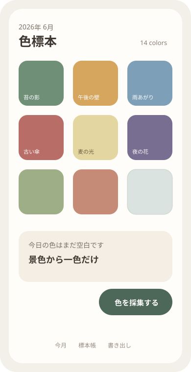
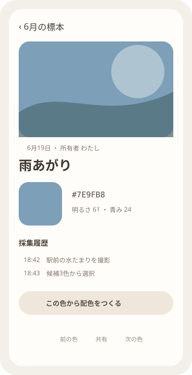

Question Note
一日一色を集める「色標本日記」アプリ事業案


体験の全体像
「色標本日記」は、カメラで目の前の景色を切り取り、その日を代表する一色だけを保存するアプリです。長文も公開投稿も不要で、月末には31色以下の自分だけの配色ができます。中心の楽しさはいつもの景色から色を発見し、時間が一枚の配色へ堆積することです。
利用者・きっかけ・継続ループ
| 主対象 | 写真日記は重いが、色・服・部屋・デザインを見るのが好きな個人 |
|---|---|
| 状況トリガー | 通勤、散歩、買い物中に気になる色を見つけた瞬間 |
| 反復ループ | 撮る → 一点を選ぶ → 色名を付ける → 月の配色を見る |
| 端末面 | カメラ、ホーム画面ウィジェット、月別標本帳 |
| 内容差分 | 本人の環境光、対象、季節、選択位置から毎日変わる |
既存手段で足りない点
- 写真アプリは画像全体を残すため、一色を見つけた感覚が埋もれます。
- 配色ツールは制作目的が強く、日常の発見を一日一回ためる習慣になりません。
- SNSは公開反応が中心で、私的な観察と月の振り返りを静かに保ちにくいです。
サービス構成と保持理由
- カメラで撮り、画面の一点から色を抽出する。
- 候補3色から一色を選び、任意で短い名前を付ける。
- 今日の色をウィジェットへ反映する。
- 月末に配色カード、壁紙、印刷用データを生成する。
端末内処理を基本にし、元写真をクラウドへ送らない選択を標準にします。利用者は、広告のない静かな採集、年比較、高品質な書き出し、季節ごとの配色テンプレートに少額を払います。
100万円規模に抑えた市場設定
| 到達可能利用者 | 作品紹介・デザインコミュニティ経由で5,000人 | 大量広告を前提にしない |
|---|---|---|
| 年額プラン | 850人 x 960円 | 816,000円 |
| 書き出しテーマ | 680件 x 300円 | 204,000円 |
| 初年度売上 | 合計 | 1,020,000円 |
AWSシステム要件と支出
東京リージョン、1 USD = 150円、無料枠・クレジット除外、1,500 MAU、元写真は原則端末内、同期は色値と小型プレビューだけの概算です。公開前にAWS Pricing Calculatorで再計算します。
| AWSリソース | 用途 | 使用量 | 月額 | 年額 |
|---|---|---|---|---|
| Amazon S3 | 書き出しテンプレートと小型プレビュー | 15GB | 500円 | 6,000円 |
| Amazon CloudFront | テンプレート配信 | 月40GB | 1,100円 | 13,200円 |
| Amazon Cognito | 任意同期アカウント | 1,000 MAU | 600円 | 7,200円 |
| Amazon API Gateway | 標本・購入権利同期API | 月10万件 | 300円 | 3,600円 |
| AWS Lambda | 購入検証、月間カード生成 | 月12万実行 | 450円 | 5,400円 |
| Amazon DynamoDB | 利用者設定、日付、色値、色名、元写真の端末内参照、月別並び、購入権利、同期版、削除状態 | 3GB、月20万読書き | 900円 | 10,800円 |
| Amazon SES | 購入・復旧メール | 月1,000通 | 200円 | 2,400円 |
| Amazon CloudWatch | 同期・生成失敗監視 | ログ2GB、6アラーム | 800円 | 9,600円 |
| AWS Backup | 色標本と購入権利の日次復旧 | 8GB | 450円 | 5,400円 |
| AWS Budgets | 配信費上限通知 | 2予算 | 150円 | 1,800円 |
| Amazon Route 53 | 紹介サイト・APIのDNS | 1ゾーン | 100円 | 1,200円 |
| AWS合計 | 小規模時の予算上限 | 5,550円 | 66,600円 | |
AIを使った開発見積もり
| 体験設計 | 採集導線と文案の発散 | 1週 |
|---|---|---|
| 試作 | カメラ、抽出、月間配色 | 2週 |
| 本実装 | WidgetKit、同期、課金、テスト補助 | 5週 |
| 検証 | 色再現、アクセシビリティ、端末試験 | 3週 |
AIなしの約16週を約11週へ短縮します。色再現、独自ビジュアル、プライバシー表示は人が判断します。
売上・支出・利益
売上 - 支出 = 利益
| 売上 | 1,020,000円 | 年額816,000円 + テーマ204,000円 |
|---|---|---|
| 支出 | 339,600円 | AWS 66,600円、ストア手数料等153,000円、デザイン80,000円、端末・告知40,000円 |
| 利益 | 680,400円 | 事業主の制作・運営人件費と税引前 |
必要人数と人材要件
iOS開発・運営1名 + デザイン単発外注です。実行者がカメラ、WidgetKit、AWS同期、課金を担い、色設計とアクセシビリティを外部レビューします。
リスクと最初の検証
- 照明やディスプレイで色が変わるため、絶対色測定ではなく記憶の標本だと明示する。
- 連続日数を競わせず、空白も月の配色として残す。
- 色覚差に備え、色名、明度、パターンでも区別する。
50人に6週間提供し、週3回以上の採集率、月末カードの保存率、年額960円の購入意思を測ります。